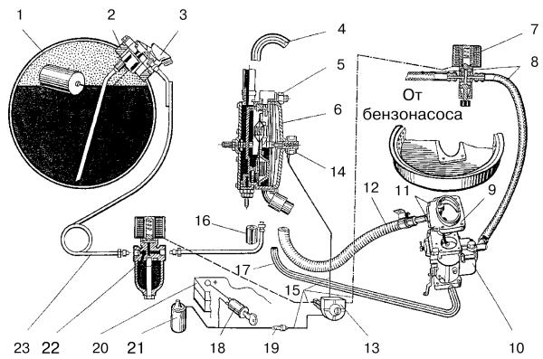
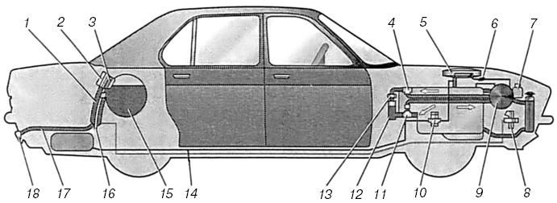

Типовая схема установки газобаллонного оборудования
для легкового автомобиля с карбюраторным двигателем.
В состав оборудования, устанавливаемого на автомобиль, для работы двигателя на сжиженном нефтяном газе (ГСН), входят следующие элементы (рис. 20): баллон (1), фланец (2), к которому прикреплен блок запорно-предохранительной арматуры (3).

Рис. 20. Схема газобаллонной установки для работы на газе сжиженном нефтяном: 1 – баллон для ГСН; 2 – фланец; 3 – блок запорно-предохранительной арматуры с заправочным устройством и вентиляцией; 4 – шланг к штуцеру водяного насоса; 5 – винт регулировки давления во второй ступени редуктора; 6 – редуктор-испаритель низкого давления; 7 – электромагнитный бензиновый клапан; 8 – шланг подачи бензина; 9 – смеситель; 10 – карбюратор; 11 – винты регулировки; 12 – шланг газовый низкого давления; 13 – переключатель вида топлива; 14 – электромагнитный клапан; 15 – электрическая цепь; 16 – шланг подачи теплой воды от отопителя салона; 17 – вакуумный шланг; 18 – замок зажигания; 19 – предохранитель; 20 – аккумулятор; 21 – катушка зажигания; 22 – электромагнитный газовый клапан с фильтром; 23 – газопровод высокого давления.
Из баллона по гибкому медному (или стальному) газопроводу (23) высокого давления (диаметром 6х1 мм) газ поступает в электромагнитный газовый клапан с фильтром (22).
Газопровод от баллона до моторного отделения укладывают под днищем автомобиля параллельно бензопроводу и фиксируют крепежными скобами с помощью саморезов. Перед подключением к электромагнитному газовому клапану (22) трубопровод снабжают компенсационным устройством (виток трубки диаметром 80 мм), предохраняющим трубопровод от поломок.
Электромагнитный газовый клапан, редуктор-испаритель, смеситель и электромагнитный бензиновый клапан устанавливают в подкапотном пространстве. От электромагнитного газового клапана трубопровод проводят у месту входа газа в редуктор (6). В местах, особо подверженных трению или удару, газопровод высокого давления облицовывают хлорвиниловым или резиновым шлангом.
Соединение редуктора со смесителем (9), устанавливаемого на карбюраторе, производят посредством гибкого армированного шланга (12).
Редуктор монтируют как можно ближе к смесителю и соединяют со смесителем без резких изменений направления соединительного шланга.
Резиновым вакуумным шлангом (17) соединяют патрубок холостого хода редуктора с патрубком карбюратора (или впускным трубопроводом).
Связь бензонасос – карбюратор осуществляется армированным, бензостойким шлангом (8), проходящим от бензонасоса до электромагнитного бензинового клапана (7), и далее – к карбюратору (10).
Для подогрева газа в редукторе разрезают шланг, соединяющий отопитель салона с насосом системы охлаждения двигателя, и подводят к нижнему патрубку редуктора, так как теплая вода должна поступать в редуктор снизу. Верхний патрубок отвода воды из редуктора соединяют шлангом (4) с водяным насосом.
При пуске двигателя газ из редуктора под воздействием разрежения, возникающего во всасывающем тракте двигателя, по шлангу, соединяющему редуктор с дозатором газа (6) рис. 21, обеспечивающим автоматическое регулирование количества газа, подается в карбюраторно-смесительную проставку (5) (в зависимости от режима работы двигателя – холостой ход, частичные нагрузки и полная мощность), что обеспечивает экономичное протекание рабочего процесса.

Рис. 21. Схема размещения газового оборудования на автомобиле: 1 – гофрированные вентиляционные трубки; 2 – герметичная коробка; 3 – запорно-контрольная и предохранительная арматура; 4, 11 – тройники; 5 – смесительная проставка; 6 – дозатор газа; 7 – блок управления; 8 – электромагнитный газовый клапан с фильтром; 9 – редуктор-испаритель; 10 – электромагнитный клапан бензина; 12 – отопитель салона; 13 – кран отопителя салона; 14 – трубопровод высокого давления; 15 – дюралюминиевый баллон; 16 – эжекторы; 17 – переходная трубка; 18 – заправочное устройство.
Далее по шлангу, соединяющему дозатор с карбюраторно-смесительной проставкой, газ смешивается с воздухом, поступающим из воздушного фильтра. Образованная газовоздушная смесь через карбюратор направляется во впускной трубопровод и цилиндры двигателя.
В салоне в удобном месте устанавливают переключатель вида топлива (13) (рис. 20), присоединяя его к источнику напряжения (20) (аккумулятору) через клемму замка зажигания (18) и предохранитель (19). По схеме осуществляют монтаж электрической цепи (15) дополнительного электрооборудования автомобиля, переоборудованного на газ сжиженный нефтяной.